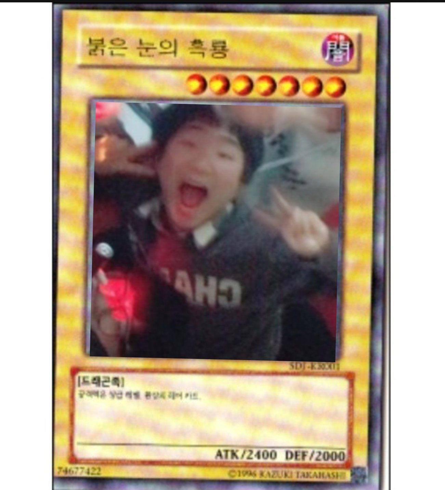

| 시흥시 2026 시즌 최장신 파충류 | |
| [ 펼치기 · 접기 ] | |
|
 |
|
| 드래곤 둥지 No.1 | |
| 여은혁 Yeo Eunhyeok | |
| 출생 | 1998년 10월 30일 (28세) 드래곤 둥지 (현 경기도 시흥시) |
| 종족 | 🐉 드래곤족 (Dragon)[1] |
| 국적 | 🇰🇷 대한민국 |
| 신체 | 538cm, O형, 발사이즈 290mm |
| 학력 | 고등학교 모의고사 전과목 0점 (올빵) 신화 보유 |
| 주요 관계 | 경훈냥이 (10년 지기 악우, 메이드 카페 최애 스태프) |
| 주요 서식지 | 침대 위, 노래방 1번 방, 인스타 릴스 탭, 모 메이드 카페 |
| MBTI | ISFJ (본인은 차가운 인플루언서상이라고 주장) |
대한민국의 인물이자 시흥시에 은신 중인 고위 드래곤족. 평소에는 마나 소모를 줄이기 위해 평범한 인간 청년의 모습으로 폴리모프하여 살아가고 있다. 주요 활동 반경은 침대 반경 2미터를 벗어나지 않는다.
겉으로는 무관심하고 차분한 척 행동하나, 마음속 깊은 곳에는 '알고리즘의 간택을 받아 대스타가 되고 싶다'는 야망을 품고 있는 전형적인 음지 관종이다.
종족값에 걸맞게 신장이 무려 538cm에 달한다. 시흥시 일대에서 전봇대보다 큰 생명체가 걸어 다니는 것이 목격된다면 십중팔구 여은혁이다.
그러나 키에 비해 발 사이즈는 고작 290mm에 불과하다. 거의 이쑤시개 위에 얹어진 볼링공 수준의 안정감이다. 이 기형적인 비율 탓에 바람만 불어도 휘청거리며, 길을 걷다 혼자 발이 꼬여 넘어지는 참사가 잦다. 본인은 이를 "공기 저항을 최소화한 최첨단 드래곤의 체형"이라고 주장한다.
경훈냥이와는 10년이 넘는 세월 동안 온갖 기행을 함께해 온 영혼의 단짝이자 악우(惡友)이다.
본인은 부정하고 있으나, 경훈냥이가 일하는 메이드 카페에 신장 538cm의 거구를 구겨 넣고 들어가 VIP 전용석에서 "오이시쿠나레" 주문을 함께 외친 사실이 공공연하게 알려져 있다. 심지어 둘이 나란히 고양이 귀 머리띠를 쓰고 다정하게 브이(V)를 하며 찍은 즉석 사진이 단톡방에 유출되면서 사실상 메이드 카페 공식 1호 단골 손님으로 박제되었다.[2]
여행을 갈 때마다 경훈냥이의 캐리어에서 술을 털어 마시는 황금 고블린 전담 레이드 딜러 역할을 맡고 있기도 하다.
같은 드래곤 종족이라는 이유 하나만으로 쉬바나, 아우렐리온 솔, 스몰더 같은 파충류 계열 챔피언에 광적인 집착을 보인다. 심지어 인게임에서 드래곤 오브젝트(용)가 젠되면 팀의 오더와 상관없이 혼자 용 둥지로 돌진하여 의문사하는 '용 집착 증후군'을 앓고 있다.
주 포지션은 버스 승객이며, 팀원이 킬을 따내면 "내가 판 깔아줬다"며 숟가락을 얹는 뻔뻔함을 보여준다.
지인들에게 본인이 드디어 롤 '플래티넘'에 등극했다며 티어 부심을 부리다 전적 사이트(OP.GG)에 의해 덜미를 잡힌 사건이다. 혼자 돌리는 솔로 랭크는 여전히 골드4에서 헤엄치고 있었으며, 플래티넘을 찍은 것은 친구들의 바짓가랑이를 붙잡고 달성한 자유 랭크였음이 밝혀졌다.[3]
확률형 뽑기 게임에 120만 원이라는 거금을 태우고도 천장을 치지 못해 원하는 캐릭터를 뽑지 못한 레전드 흑역사다. 사건 직후 3일 동안 밥도 먹지 않고 방구석에서 릴스만 보며 넋을 놓았다고 전해진다. 본인은 "앞으로의 10년을 위한 투자였다"는 궤변을 늘어놓고 있다.
과거 모바일 게임 《드래곤빌리지3》 플레이 당시 사용했던 닉네임 'ㄱㄴ'이 엄청난 파장을 불러일으킨 사건이다. 처음에는 단순한 초성 닉네임인 줄 알았으나, 그가 평소 앓고 있던 '드래곤 집착 증후군'과 맞물려 "용과 (모종의 행위가) '가능'하다"는 뜻이 아니냐는 끔찍한 의혹이 제기되었다.
논란이 일파만파 커지자 본인은 "그냥 키보드를 막 쳐서 나온 의미 없는 초성일 뿐이다"라며 극구 부인했다. 이후 여러 자체적인 조사(?) 끝에 공식적으로는 사실이 아닌 것으로 밝혀지며 사건이 일단락되는 듯했다.
하지만... 그의 끈적한 눈빛을 곁에서 지켜본 친한 지인들은 모두 진실이 무엇인지 알고 있다고 한다.[4]
최근 각종 OTT 플랫폼에서 중국 드라마(중드)에 과도하게 심취하여 유료 결제를 남발하는 정황이 포착되었다. 통장 잔고가 바닥을 드러내는 와중에도 중드 VIP 멤버십과 VOD 결제는 절대 끊지 않는 기행을 보여 지인들의 공분을 샀다.
이에 주변에서는 "게임에 120만 원을 꼴아박더니 이제는 대륙의 자본에 영혼까지 팔아넘긴 것이 아니냐", "사실 서양 드래곤이 아니라 중국의 동양 '용(龍)' 출신이라 조국을 그리워하는 것이다"라는 등 친중(親中) 행보 논란이 거세게 일고 있다.[5]
고등학교 재학 시절 치른 전국연합학력평가(모의고사)에서 국어, 수학, 영어, 탐구 전 과목 0점이라는 통계학의 한계를 뛰어넘은 대기록을 작성한 사건이다. 4~5지선다 객관식 시험에서 단 한 문제도 맞히지 않고 완벽한 0점을 받는 것은 수학적으로 전과목 만점을 받을 확률보다 훨씬 희박한 기적이다.
당시 성적표를 받아 든 담임교사는 경악을 금치 못했으며, 지인들 사이에서는 "정답만 귀신같이 피해 가는 기적의 회피 기동 능력"이라는 극찬(?)이 쏟아졌다. 본인은 "답안지를 밀려 쓴 것이 아니라 드래곤어(語)로 마킹해서 채점기가 인식하지 못한 것"이라는 엽기적인 해명을 내놓았다.[6]
본 문서가 등재된 직후에는 "이거 다 날조니 당장 글을 내려라", "단톡방에서 당장 지우라"며 극도로 억울해하며 난동을 피웠다. 그러나 정작 다른 친구들이 "이거 인스타 스토리나 릴스에 올려서 퍼뜨려도 되냐?"고 묻자 "어? 어... 뭐 올려도 되긴 하는데..."라며 흔쾌히 승낙하는 이중적인 행보를 보여 큰 웃음을 주었다.
지인들은 "겉으로는 화난 척하지만 속으로는 내심 인스타 떡상을 노리고 인플루언서가 되고 싶어 안달이 난 게 확실하다"고 입을 모아 증언하고 있다.[7]
최근 지인들에게 "요즘 빡세게 운동을 시작했다", "새벽까지 하느라 잠을 못 잔다"며 건강한 삶을 사는 척 갓생(God생) 호소를 한 바 있다. 그러나 그가 말한 '운동'의 실체가 헬스장 쇠질이 아니라, 방구석에서 모니터를 보며 드래곤 캐릭터들의 옷을 벗기는(안 입히는) 매우 수상한 행위였음이 밝혀져 충격을 주었다.
평소 새벽마다 단톡방에서 "아 잠이 안 온다"며 불면증을 호소하던 진짜 이유가 바로 이 '심야 드래곤 탈의 운동' 때문이었던 것. 과거 드래곤빌리지3 'ㄱㄴ(가능)' 사건과 맞물려, 그의 이종족 취향이 마침내 돌이킬 수 없는 강을 건넜다는 학계의 정설이 굳어지고 있다.[8]
[1] 학계에 보고되지 않은 희귀 드래곤 종족이다. 브레스 대신 삑사리를 뿜는다.
[2] 목격자에 따르면 여은혁의 덩치가 너무 커서 카페 테이블이 거의 장난감처럼 보였다고 한다.
[3] 당시 함께 게임했던 지인은 "거의 시체를 끌고 산을 넘는 기분이었다"고 증언했다.
[4] 지인들의 증언에 따르면, 당시 그의 드래곤 육성 방식과 애정표현은 어딘가 심하게 뒤틀려 있었다고 한다.
[5] 본인은 "단지 스토리와 연출이 흥미진진해서 결제했을 뿐"이라며 황급히 해명 중이다.
[6] 확률적으로 0점을 다 맞히는 건 모든 정답을 완벽하게 알고 있어야만 의도적으로 피할 수 있다는 괴담이 돌았으나, 그냥 잤던 것으로 밝혀졌다.
[7] 본 문서가 퍼져서 인스타 팔로워가 늘어나면 슬그머니 프로필 링크에 이 위키 주소를 걸어둘 가능성이 99.9%다.
[8] 지인들은 "도대체 방구석에서 어떤 근육을 쓰는 운동이길래 새벽 내내 잠을 못 자냐"며 경악을 금치 못했다.